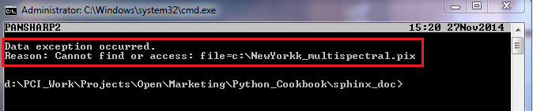

Geomatica Py General¶
This section provides some basic recipes for testing your installation, importing Geomatica’s Python library (modules), accessing help, error handling, etc.
Check Installation of Geomatica Py Libraries¶
Quickly check to ensure that Geomatica is correctly installed and licensed for your computer. Use Python’s interactive mode in the terminal/console for quickly checking the installation and licensing.
If you are running in CMD and have multiple Python versions installed, make sure you are using the 64-bit python 2.7 version. This is especially important if you have ArcGIS installed. A 32-bit version of python in installed with ArcGIS.
More information on Getting Started with Geomatica and Python is available from the Developer Zone: https://support.pcigeomatics.com/hc/en-us/articles/207601873-Getting-Started-with-Geomatica-and-Python
Open Command Line (Start > type CMD) In CMD navigate to the python27 folder:
> cd C:python27 (this could be different based on your installation)
import pciIf no error message appears then the PCI library has been correctly imported. You can then choose to check the Geomatica Version from command line to ensure that the correct Geomatica version is being used.
pci.versionThe PCI version is then printed in the terminal.
Import Geomatica Py Libraries¶
This example explicitly imports the pansharp2 function from the pansharp2 module. Alternatively, you can also import the pci.algo module. This allows you to only import one module. You would then run a function with the algo module - i.e. algo.pansharp2() instead of pansharp2().
from pci.pansharp2 import pansharp2 # Imports the pansharp2 function from the pansharp2 module from pci.algo import * # imports the algo module which provides access to all Geomatica functions
Accessing Help About Geomatica Py Function¶
Python prints help documentation to the terminal/console for the specified function. This includes information about the signature of the function (arguments that need to be passed) and information about what the function does. Furthermore, the help document includes information about what input data is required and what output is produced.
It is best to access this directly with the python interpreter in Geomatica’s Focus or using a terminal/console.
from pci.pansharp2 import pansharp2 help(pansharp2)
Handling Geomatica Py Exceptions¶
This example demonstrates how to handle exceptions that may result from incorrectly invoking a Geomatica function. The main behaviour of this action is that the script will continue to run if the exception is called. This is mainly desirable when performing batch operations, so that if one file fails to run, the script will continue to process the other files.
from pci.pansharp2 import pansharp2 from pci.exceptions import PCIException ms_file = r"c:\NewYorkk_multispectral.pix" # this file is incorrectly spelt and thus, does not exist pan_file = r"c:\NewYork_panchromatic.pix" out_file = r"c:\NewYork_pansharpened.pix" try: pansharp2(fili=ms_file, dbic=[1,2,3,4], fili_pan=pan_file, filo=out_file, ftype="pix", foptions="tiled512") except PCIException, e: print e except Exception, e: print eThis results in python printing a PCI caught exception that the input multispectral file does not exist The script will continue to run through to the next line of code without exiting, because the exception is handled with a print statement.

Input Methods¶
This recipe demonstrates three (3) different input methods. Developers can decide if they want to input the file path directly as a variable, prompt users for the path location or pass the path as an argument.
# Method 1 - In the script directly input_file = r"c:\raw_imagery\image.tif" # Method 2 - With a user prompt input_file = raw_input("Please provide the path to the input image ") '''The script will pause until the user provides an input path. At which point, the variable "input_file" will be assigned the user provided path.''' # Method 3 - Passing information as arguments when launching the script (usually the preferred method) from sys import argv script, input_image, output_dir = argv print "input image is: " + input_image print "output directory is: " + output_dir '''The user running the script will be expected to provide the path to the input file and output directory after providing the location of the script. Each argument is separated by a white space" For example: python c:\python_script\myscript.py c:\raw_imagery\image.tif" '''